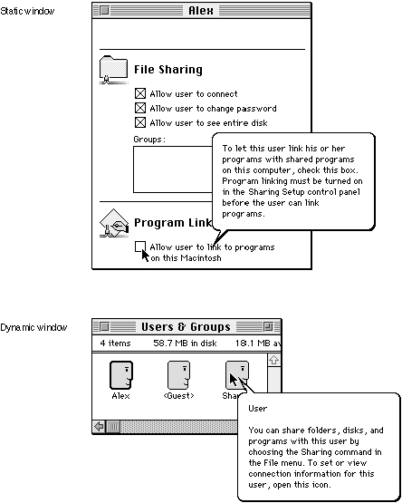

Providing Help Balloons for Window Content
You can create help balloons for objects within the content area of your windows. How you choose to provide help balloons for the content area of your windows depends mainly on whether your windows are static or dynamic.A static window doesn't change its title or reposition any of the objects within its content area. A dynamic window can reposition any of its objects within the content area, or its title may change.
For example, any window that scrolls past areas of interest to the user is a dynamic window, because the objects with associated help balloons can change location as the user scrolls. A window that displays only a picture that cannot be resized or scrolled is an example of a static window. Figure 3-18 shows examples of static and dynamic windows. "Providing Help Balloons for Static Windows" beginning on page 3-60, "Associating Help Resources With Static Windows" beginning on page 3-63, and "Providing Help Balloons for Dynamic Windows" beginning on page 3-69 describe how to provide help balloons for these types of windows.
Figure 3-18 Static and dynamic windows
